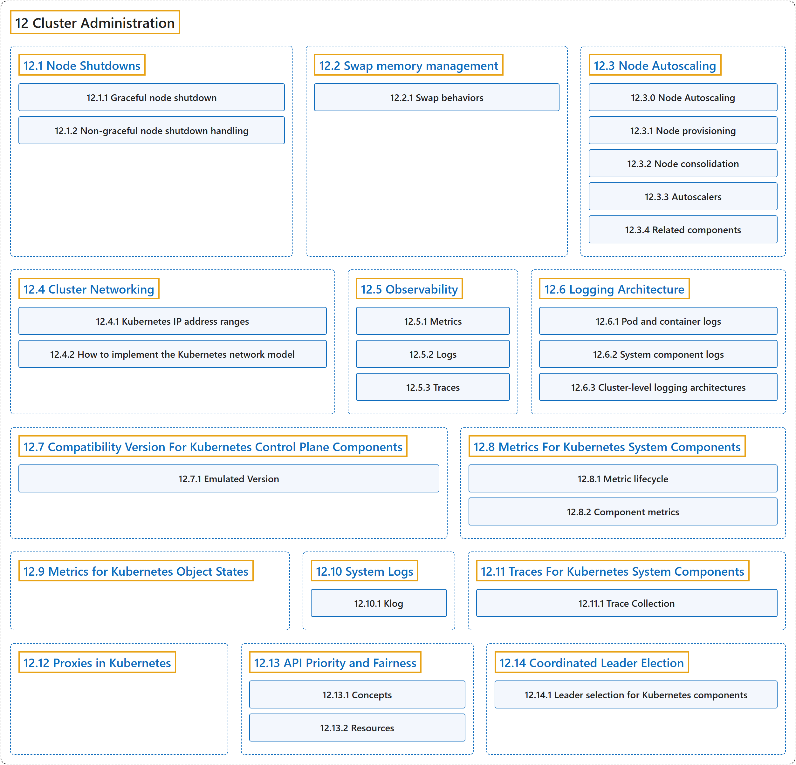

12 Cluster Administration
Classification

Glossary
| Term | Definition | 中文翻译 | Source |
|---|---|---|---|
| 12 Cluster Administration 集群管理 |
"Lower-level detail relevant to creating or administering a Kubernetes cluster." | 底层细节，关于创建或管理 Kubernetes 集群。 | The Kubernetes Authors, n.d.-b, "Cluster Administration", para. 1 |
| 12.1 Node Shutdowns 节点关闭 |
(context) "In a Kubernetes cluster, a node can be shut down in a planned graceful way or unexpectedly because of reasons such as a power outage or something else external." | （语境）在 Kubernetes 集群中，节点可能按计划体面地关闭，也可能意外关闭，原因可能是断电或其他外部事件。 | The Kubernetes Authors, n.d.-j, "Node Shutdowns", para. 1 |
| 12.2 Swap memory management 交换内存管理 |
(context) "Kubernetes can be configured to use swap memory on a node, allowing the kernel to free up physical memory by swapping out pages to backing storage." | （语境）Kubernetes 可以配置为在节点上使用交换内存，让内核释放物理内存，方法是把内存页换出到后备存储。 | The Kubernetes Authors, n.d.-m, "Swap memory management", para. 1 |
| 12.3 Node Autoscaling 节点自动扩缩 |
"Automatically provision and consolidate the Nodes in your cluster to adapt to demand and optimize cost." | 自动供应和合并集群中的节点，以适应需求并优化成本。 | The Kubernetes Authors, n.d.-i, "Node Autoscaling", para. 1 |
| 12.4 Cluster Networking 集群网络 |
(context) "Networking is a central part of Kubernetes, but it can be challenging to understand exactly how it is expected to work." | （语境）网络是 Kubernetes 的核心部分，但它究竟应当如何工作却可能难以准确理解。 | The Kubernetes Authors, n.d.-c, "Cluster Networking", para. 1 |
| 12.5 Observability 可观测性 |
"In Kubernetes, observability is the process of collecting and analyzing metrics, logs, and traces—often referred to as the three pillars of observability—in order to obtain a better understanding of the internal state, performance, and health of the cluster." | 在 Kubernetes 中，可观测性是收集和分析指标、日志和追踪的过程（这三者常被称为可观测性的三大支柱），以便更好地了解集群的内部状态、性能和健康状况。 | The Kubernetes Authors, n.d.-k, "Observability", para. 2 |
| 12.6 Logging Architecture 日志架构 |
(context) "Application logs can help you understand what is happening inside your application." | （语境）应用日志可以帮助你了解应用内部正在发生什么。 | The Kubernetes Authors, n.d.-f, "Logging Architecture", para. 1 |
| 12.7 Compatibility Version For Kubernetes Control Plane Components Kubernetes 控制平面组件的兼容版本 |
(context) "Since release v1.32, we introduced configurable version compatibility and emulation options to Kubernetes control plane components to make upgrades safer by providing more control and increasing the granularity of steps available to cluster administrators." | （语境）自 v1.32 版本起，我们引入了可配置的版本兼容和模拟选项，用于 Kubernetes 控制平面组件，以让升级更安全：提供更多控制，细化集群管理员可用的步骤。 | The Kubernetes Authors, n.d.-d, "Compatibility Version For Kubernetes Control Plane Components", para. 1 |
| 12.8 Metrics For Kubernetes System Components Kubernetes 系统组件的指标 |
"System component metrics can give a better look into what is happening inside them." | 系统组件指标可以让你更好地了解组件内部正在发生什么。 | The Kubernetes Authors, n.d.-h, "Metrics For Kubernetes System Components", para. 1 |
| 12.9 Metrics for Kubernetes Object States Kubernetes 对象状态的指标 |
(context) "kube-state-metrics, an add-on agent to generate and expose cluster-level metrics." | （语境）kube-state-metrics，一个附加代理，用来生成并暴露集群级指标。 | The Kubernetes Authors, n.d.-g, "Metrics for Kubernetes Object States", para. 1 |
| 12.10 System Logs 系统日志 |
"System component logs record events happening in cluster, which can be very useful for debugging." | 系统组件日志记录集群中发生的事件，对调试非常有用。 | The Kubernetes Authors, n.d.-n, "System Logs", para. 1 |
| 12.11 Traces For Kubernetes System Components Kubernetes 系统组件的追踪 |
"System component traces record the latency of and relationships between operations in the cluster." | 系统组件追踪记录集群中各操作的延迟及其相互关系。 | The Kubernetes Authors, n.d.-o, "Traces For Kubernetes System Components", para. 1 |
| 12.12 Proxies in Kubernetes Kubernetes 中的代理 |
(context) "There are several different proxies you may encounter when using Kubernetes:" | （语境）有几种不同的代理，你可能在使用 Kubernetes 时遇到： | The Kubernetes Authors, n.d.-l, "Proxies", para. 1 |
| 12.13 API Priority and Fairness API 优先级与公平性 |
"The API Priority and Fairness feature (APF) is an alternative that improves upon aforementioned max-inflight limitations." | API 优先级与公平性功能（APF）是一种替代方案，改进了前面提到的最大并发请求限制。 | The Kubernetes Authors, n.d.-a, "API Priority and Fairness", para. 2 |
| 12.14 Coordinated Leader Election 协调式领导者选举 |
"Kubernetes 1.37 includes a beta feature that allows control plane components to deterministically select a leader via coordinated leader election." | Kubernetes 1.37 包含一项 beta 功能，允许控制平面组件以确定性方式选出领导者，方法是协调式领导者选举。 | The Kubernetes Authors, n.d.-e, "Coordinated Leader Election", para. 3 |
References
The Kubernetes Authors. (n.d.-a). API Priority and Fairness. Kubernetes Documentation. Retrieved October 31, 2026, from https://kubernetes.io/docs/concepts/cluster-administration/flow-control/
The Kubernetes Authors. (n.d.-b). Cluster Administration. Kubernetes Documentation. Retrieved October 31, 2026, from https://kubernetes.io/docs/concepts/cluster-administration/
The Kubernetes Authors. (n.d.-c). Cluster Networking. Kubernetes Documentation. Retrieved October 31, 2026, from https://kubernetes.io/docs/concepts/cluster-administration/networking/
The Kubernetes Authors. (n.d.-d). Compatibility Version For Kubernetes Control Plane Components. Kubernetes Documentation. Retrieved October 31, 2026, from https://kubernetes.io/docs/concepts/cluster-administration/compatibility-version/
The Kubernetes Authors. (n.d.-e). Coordinated Leader Election. Kubernetes Documentation. Retrieved October 31, 2026, from https://kubernetes.io/docs/concepts/cluster-administration/coordinated-leader-election/
The Kubernetes Authors. (n.d.-f). Logging Architecture. Kubernetes Documentation. Retrieved October 31, 2026, from https://kubernetes.io/docs/concepts/cluster-administration/logging/
The Kubernetes Authors. (n.d.-g). Metrics for Kubernetes Object States. Kubernetes Documentation. Retrieved October 31, 2026, from https://kubernetes.io/docs/concepts/cluster-administration/kube-state-metrics/
The Kubernetes Authors. (n.d.-h). Metrics For Kubernetes System Components. Kubernetes Documentation. Retrieved October 31, 2026, from https://kubernetes.io/docs/concepts/cluster-administration/system-metrics/
The Kubernetes Authors. (n.d.-i). Node Autoscaling. Kubernetes Documentation. Retrieved October 31, 2026, from https://kubernetes.io/docs/concepts/cluster-administration/node-autoscaling/
The Kubernetes Authors. (n.d.-j). Node Shutdowns. Kubernetes Documentation. Retrieved October 31, 2026, from https://kubernetes.io/docs/concepts/cluster-administration/node-shutdown/
The Kubernetes Authors. (n.d.-k). Observability. Kubernetes Documentation. Retrieved October 31, 2026, from https://kubernetes.io/docs/concepts/cluster-administration/observability/
The Kubernetes Authors. (n.d.-l). Proxies in Kubernetes. Kubernetes Documentation. Retrieved October 31, 2026, from https://kubernetes.io/docs/concepts/cluster-administration/proxies/
The Kubernetes Authors. (n.d.-m). Swap memory management. Kubernetes Documentation. Retrieved October 31, 2026, from https://kubernetes.io/docs/concepts/cluster-administration/swap-memory-management/
The Kubernetes Authors. (n.d.-n). System Logs. Kubernetes Documentation. Retrieved October 31, 2026, from https://kubernetes.io/docs/concepts/cluster-administration/system-logs/
The Kubernetes Authors. (n.d.-o). Traces For Kubernetes System Components. Kubernetes Documentation. Retrieved October 31, 2026, from https://kubernetes.io/docs/concepts/cluster-administration/system-traces/